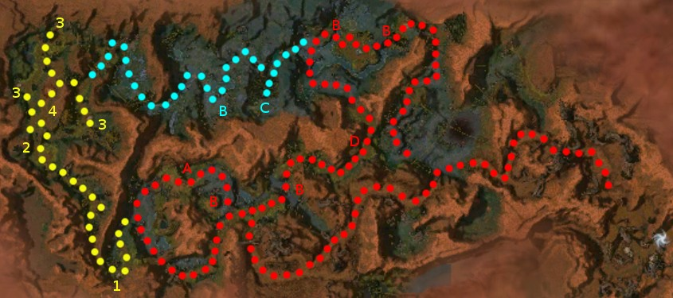

Elite: None / not listed
M11
Bloodstone Fen
◉ Mission Map

Click to enlarge · Local cache · Wiki
Summary (click to expand)
The Shining Blade claims that the White Mantle has been lying to the heroes all along, actually leading the Chosen to the Bloodstone to murder them.
Region: Maguuma Jungle · Mission: 11 of 25 · Type: Cooperative
✓ Objectives
Seek the truth about the White Mantle.
- Locate Blade Scout Ryder. He'll take you to the Bloodstone.
- Use the vine bridges to traverse the jungle.
- ADDED: Travel on to the Bloodstone on your own.
- ADDED: Avenge the chosen by killing Justiciar Hablion and his personal guards.
- *BONUS* Awaken the Druids while preserving their guardians.
→ Walkthrough
Players start the mission looking for Blade Scout Ryder and his party. Saidra informs the party that Ryder has gone ahead and drops a Vine Seed. Drop the seed on the designated spot to create a vine bridge. Along the way there are 3 more Vine Seed Flowers (points A and C) which, when clicked, yield a Vine Seed to create bridges at spots marked by a glowing circle on the jungle floor (several of which are marked B on the map).
You will be told to find Bloodstone on your own after speaking with Blade Scout Ryder (point D) or after creating the vine bridge at the location where the bonus path (blue) merges back with the mission path. Eventually the party will find itself at the Bloodstone, and must engage Justiciar Hablion upon the stone itself.
Each Vine Seed Plant produces only one Vine Seed and, when taken, Moss Scarabs popup. The number of Vine Seed Flowers at a location is a good indication of about how many Vine Seeds the party will need to pick up. If your party has fewer than three players, you will have to re-trace ground sometimes. There is a second cluster of Vine Seed Flowers (point C) that is closer to the last bridge. Mobs encountered include Wind Riders, Jungle Trolls, and Moss Scarabs in medium-sized groups so be prepared for Hexes, Conditions, and Melee damage.
This mission is not all that difficult if you keep one or two things in mind while completing the main objectives and the bonus. The beginning of the mission follows the formatted run, just kill all foes in your path. Once you reach the Bloodstone, the Curse of the Bloodstone slows the casting of Resurrection skills on allies who perish on the Bloodstone's surface. Instead of charging into the fray, scurry to one side of the stone. Take out the White Mantle Abbot and the fellow with him. Then, run over to the other side of the stone (without going past Justiciar Hablion) and defeat that White Mantle Abbot and his companion. It will make taking out Justiciar Hablion much easier!
★ Bonus
The bonus for this mission is to use Vine Seeds to awaken four Druids so that they, in turn, may awaken the Elder Druid. This must be done without killing any of the Jungle Guardians who protect the sleeping Druids: if even one guardian dies, the bonus is failed and Ravagers are summoned instead. Guardians can easily be killed by accident due to heroes, henchmen, or other NPC allies in the party. Players can use several tactics to manage these allies:
- Do not use summoning stones during the mission until the bonus has been completed.
- Set heroes to Avoid Combat and pets to Heel.
- Disable hero skills that create minions or offensive binding ritual spirits.
- Flag henchmen using the compass to ensure that they run clear of any guardians.
The bonus is triggered when the party awakens the first Druid (1 on the map) by dropping a Vine Seed on the glowing circle. The first Druid speaks, creates a Vine Bridge and slowly walks across it. The first Druid stops where the Elder Druid is to be summoned (point 4 on the map). Players will find other Vine Seed Plants (2 on the map) near this spot that they can use to awaken the other three Druids (marked 3 on the map). Several Moss Scarabs will also spawn in and around the areas where the druids are to be awakened; these (unlike the Guardians) can safely be killed without endangering the bonus.
The guardians won't chase very far and they deal low amount of damage. It is relatively safe to simply run past them, which also poses the least risk of accidentally killing them. There is always a nearby "safe" area where the guardians will not pursue, so you can stop and recover without risking a battle with them, although Moss Scarabs will tend to pop up in these areas. The path to the farthest druid in the north has a safe spot by a tree in the western edge. In hard mode, bring a speed boost and projectile protection or your NPCs will get caught in the crossfire from two groups.
Once all four Druids have been awakened the Elder Druid will appear. Killing the Jungle Guardians after their appearance no longer affects the bonus, but will still trigger the Ravagers (which are now relatively easy to kill, should you want the experience). Speak to the Elder Druid to complete the bonus. After completing the bonus, the Jungle Guardians will no longer be aggressive (although they will fight back if you attack them).
If going via the back route after the bonus (blue on the map), it is not necessary to talk to Blade Scout Ryder to complete the mission.
◆ Hard Mode
No dedicated Hard Mode section on the wiki — expect tougher foes and adjusted mechanics. See walkthrough notes.
☠ Bosses & Elites
Elite: None / not listed
Elite: None / not listed
Elite: None / not listed
Elite: None / not listed
Elite: None / not listed
Elite: None / not listed
Elite: None / not listed
Elite: None / not listed
Elite: None / not listed
Elite: None / not listed
✦ Tips & Notes
Skill recommendations
| The Guild Wars 2 Wiki has an article on Bloodstone Fen. |
- You do not have to talk to Blade Scout Ryder as it states in the mission objectives — the mission can still be completed if you ignore him.
- If you drop the Vine Seeds in the wrong location, they will try to sprout a bridge, fail, and then return to their original state. (Picking them up a second time will not generate Moss Scarabs.)
- When a Vine Seed sprouts, it deals 20 damage to adjacent foes and knocks them down. The extra Vine Seeds throughout the mission can be kept to be used for combat in this manner.
- To make it slightly easier to navigate, you can drop an item on either side of the bridge. When you want to return to the bridge (to gather more seeds, for example), target the item (default key: ;) and follow (default key: space); the game will take you on the most efficient route to the item.
- Complete exploration of this mission, including the bonus, contributes approximately 1.35% to the Tyrian Cartographer title. To fully explore the area before the final cinematic, first follow the White Mantle Abbot and White Mantle Knight on each side, as noted above, but then run past Justiciar Hablion to the rear of the Bloodstone and follow the trail until it ends, then return and dispatch Hablion.
- There is an area on the northern end of the Bloodstone, near the right side of the trail mentioned above, where you can climb up the wall a ways.
- The Vine Seed Flower at point A yields 3 Vine Seeds: 2 for mission path continuation, 1 for yellow bonus path. The Vine Seed Flower near point 4 yields 5 Vine Seeds.
- In the last cinematic, you see the back of Markis, who is presumed to be the person who informed Confessor Dorian of Justiciar Hablion's demise.
- Completion of this mission will fill in page #4 of The Flameseeker Prophecies storybook.
- After completing this mission, your party will be teleported to Quarrel Falls.
Notes
| The Guild Wars 2 Wiki has an article on Bloodstone Fen. |
- You do not have to talk to Blade Scout Ryder as it states in the mission objectives — the mission can still be completed if you ignore him.
- If you drop the Vine Seeds in the wrong location, they will try to sprout a bridge, fail, and then return to their original state. (Picking them up a second time will not generate Moss Scarabs.)
- When a Vine Seed sprouts, it deals 20 damage to adjacent foes and knocks them down. The extra Vine Seeds throughout the mission can be kept to be used for combat in this manner.
- To make it slightly easier to navigate, you can drop an item on either side of the bridge. When you want to return to the bridge (to gather more seeds, for example), target the item (default key: ;) and follow (default key: space); the game will take you on the most efficient route to the item.
- Complete exploration of this mission, including the bonus, contributes approximately 1.35% to the Tyrian Cartographer title. To fully explore the area before the final cinematic, first follow the White Mantle Abbot and White Mantle Knight on each side, as noted above, but then run past Justiciar Hablion to the rear of the Bloodstone and follow the trail until it ends, then return and dispatch Hablion.
- There is an area on the northern end of the Bloodstone, near the right side of the trail mentioned above, where you can climb up the wall a ways.
- The Vine Seed Flower at point A yields 3 Vine Seeds: 2 for mission path continuation, 1 for yellow bonus path. The Vine Seed Flower near point 4 yields 5 Vine Seeds.
- In the last cinematic, you see the back of Markis, who is presumed to be the person who informed Confessor Dorian of Justiciar Hablion's demise.
- Completion of this mission will fill in page #4 of The Flameseeker Prophecies storybook.
- After completing this mission, your party will be teleported to Quarrel Falls.